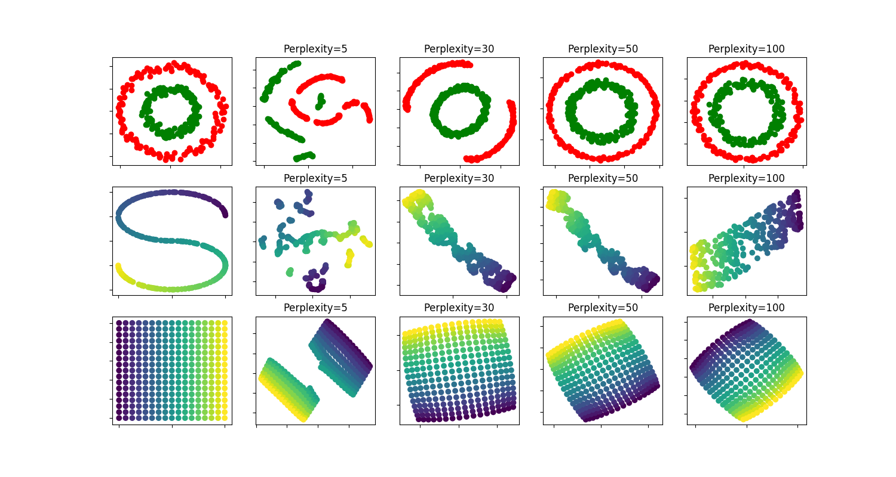

Note
Click here to download the full example code or run this example in your browser via Binder
t-SNE: The effect of various perplexity values on the shape¶
An illustration of t-SNE on the two concentric circles and the S-curve datasets for different perplexity values.
We observe a tendency towards clearer shapes as the preplexity value increases.
The size, the distance and the shape of clusters may vary upon initialization, perplexity values and does not always convey a meaning.
As shown below, t-SNE for higher perplexities finds meaningful topology of two concentric circles, however the size and the distance of the circles varies slightly from the original. Contrary to the two circles dataset, the shapes visually diverge from S-curve topology on the S-curve dataset even for larger perplexity values.
For further details, “How to Use t-SNE Effectively” https://distill.pub/2016/misread-tsne/ provides a good discussion of the effects of various parameters, as well as interactive plots to explore those effects.
Out:
circles, perplexity=5 in 0.98 sec
circles, perplexity=30 in 1.2 sec
circles, perplexity=50 in 1.3 sec
circles, perplexity=100 in 1.8 sec
S-curve, perplexity=5 in 0.96 sec
S-curve, perplexity=30 in 1.1 sec
S-curve, perplexity=50 in 1.3 sec
S-curve, perplexity=100 in 1.6 sec
uniform grid, perplexity=5 in 0.83 sec
uniform grid, perplexity=30 in 0.96 sec
uniform grid, perplexity=50 in 1 sec
uniform grid, perplexity=100 in 1.4 sec
# Author: Narine Kokhlikyan <narine@slice.com>
# License: BSD
print(__doc__)
import numpy as np
import matplotlib.pyplot as plt
from matplotlib.ticker import NullFormatter
from sklearn import manifold, datasets
from time import time
n_samples = 300
n_components = 2
(fig, subplots) = plt.subplots(3, 5, figsize=(15, 8))
perplexities = [5, 30, 50, 100]
X, y = datasets.make_circles(n_samples=n_samples, factor=.5, noise=.05)
red = y == 0
green = y == 1
ax = subplots[0][0]
ax.scatter(X[red, 0], X[red, 1], c="r")
ax.scatter(X[green, 0], X[green, 1], c="g")
ax.xaxis.set_major_formatter(NullFormatter())
ax.yaxis.set_major_formatter(NullFormatter())
plt.axis('tight')
for i, perplexity in enumerate(perplexities):
ax = subplots[0][i + 1]
t0 = time()
tsne = manifold.TSNE(n_components=n_components, init='random',
random_state=0, perplexity=perplexity)
Y = tsne.fit_transform(X)
t1 = time()
print("circles, perplexity=%d in %.2g sec" % (perplexity, t1 - t0))
ax.set_title("Perplexity=%d" % perplexity)
ax.scatter(Y[red, 0], Y[red, 1], c="r")
ax.scatter(Y[green, 0], Y[green, 1], c="g")
ax.xaxis.set_major_formatter(NullFormatter())
ax.yaxis.set_major_formatter(NullFormatter())
ax.axis('tight')
# Another example using s-curve
X, color = datasets.samples_generator.make_s_curve(n_samples, random_state=0)
ax = subplots[1][0]
ax.scatter(X[:, 0], X[:, 2], c=color)
ax.xaxis.set_major_formatter(NullFormatter())
ax.yaxis.set_major_formatter(NullFormatter())
for i, perplexity in enumerate(perplexities):
ax = subplots[1][i + 1]
t0 = time()
tsne = manifold.TSNE(n_components=n_components, init='random',
random_state=0, perplexity=perplexity)
Y = tsne.fit_transform(X)
t1 = time()
print("S-curve, perplexity=%d in %.2g sec" % (perplexity, t1 - t0))
ax.set_title("Perplexity=%d" % perplexity)
ax.scatter(Y[:, 0], Y[:, 1], c=color)
ax.xaxis.set_major_formatter(NullFormatter())
ax.yaxis.set_major_formatter(NullFormatter())
ax.axis('tight')
# Another example using a 2D uniform grid
x = np.linspace(0, 1, int(np.sqrt(n_samples)))
xx, yy = np.meshgrid(x, x)
X = np.hstack([
xx.ravel().reshape(-1, 1),
yy.ravel().reshape(-1, 1),
])
color = xx.ravel()
ax = subplots[2][0]
ax.scatter(X[:, 0], X[:, 1], c=color)
ax.xaxis.set_major_formatter(NullFormatter())
ax.yaxis.set_major_formatter(NullFormatter())
for i, perplexity in enumerate(perplexities):
ax = subplots[2][i + 1]
t0 = time()
tsne = manifold.TSNE(n_components=n_components, init='random',
random_state=0, perplexity=perplexity)
Y = tsne.fit_transform(X)
t1 = time()
print("uniform grid, perplexity=%d in %.2g sec" % (perplexity, t1 - t0))
ax.set_title("Perplexity=%d" % perplexity)
ax.scatter(Y[:, 0], Y[:, 1], c=color)
ax.xaxis.set_major_formatter(NullFormatter())
ax.yaxis.set_major_formatter(NullFormatter())
ax.axis('tight')
plt.show()
Total running time of the script: ( 0 minutes 15.222 seconds)